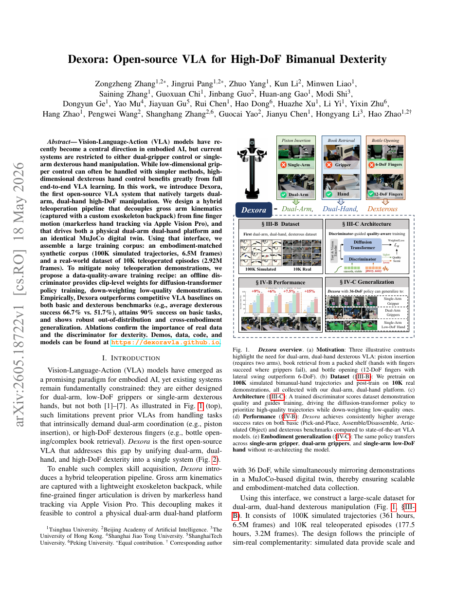

§1 Paper Info
Dexora: Open-source VLA for High-DoF Bimanual Dexterity
| Authors | Zhang et al. (Huazhe Xu group) |
| Year | 2026 |
| Affiliation | 清华大学交叉信息研究院 (IIIS, Tsinghua University) / 上海期智研究院 |
| Research Type | Vision-Language-Action (VLA) 模型 · 双臂灵巧操作 · 模仿学习 |
| Open Source | 是 — 首个面向高自由度双臂灵巧操作的开源 VLA 系统 |
| Local PDF | Zhang et al. - 2026 - Dexora Open-source VLA for high-DoF bimanual dexterity.pdf |
TL;DR — Dexora 提出并开源了首个面向高自由度（36-DoF）双臂灵巧操作的 VLA 系统。其核心创新在于：(1) 通过混合遥操作方案（外骨骼背包捕获大尺度手臂运动 + Apple Vision Pro 无标记手指追踪），在 MuJoCo 数字孪生环境中采集 100K 仿真轨迹与 10K 真实遥操作示范；(2) 训练一个 Diffusion Transformer 作为统一的动作预测器，并引入质量判别器对示范片段进行 clip-level 加权，从而抑制抖动和低质量数据对策略学习的负面影响；(3) 将双臂、双灵巧手和自然语言条件统一进单个端到端策略，而非并行两个单臂策略的简单拼接。系统在活塞插入、书本取放、开瓶等需要双臂协调与多指精细操作的任务上验证了有效性，并展示了跨 embodiment（单臂夹爪、双臂夹爪、单臂灵巧手、双臂双手）的泛化能力。
§2 Insight & Novelty
2.1 核心洞察 · Q&A 形式
Q: 核心问题是什么？
如何构建一个能从自然语言指令直接生成高自由度（36-DoF）双臂灵巧操作动作的统一模型，并使其具备跨不同 embodiment 的泛化能力？现有的 VLA 模型（如 RT-1/RT-2/Octo）仅支持单臂或双臂夹爪操作（通常 6-7 DoF），在需要多指协同的精细操作任务上完全失效。
Q: 传统方法为何失败？
传统方法存在三重瓶颈：(1) 策略架构层面 — 将两个单臂策略并行部署无法本质性地建模双臂间的力耦合与协调约束，且夹爪策略的动作空间无法泛化到灵巧手的高维连续控制；(2) 数据层面 — 高维双手动作空间的遥操作极其困难，传统外骨骼或视觉方法要么精度不足、要么成本过高、要么标定复杂，导致大规模高质量示范难以采集；(3) 训练层面 — 人工遥操作示范的质量天然不均（新手疲劳、抖动、次优轨迹），标准行为克隆（BC）给予所有示范片段等权重，导致策略被低质量数据"污染"。
Q: 本文的核心洞察是什么？
双臂灵巧操作的本质不是"两个单臂策略的简单拼接"，而是一个统一的耦合动力学系统——需要端到端建模双臂间的隐含协调模式。在此基础上，Dexora 的三个关键洞察环环相扣：(a) 用数字孪生（MuJoCo 仿真 + 实物匹配的 URDF）桥接仿真与真实数据，使 100K 仿真轨迹能为 10K 真实示范提供有效的预训练基础；(b) 混合遥操作（外骨骼捕获粗粒度手臂姿态 + Vision Pro 无标记手指追踪）首次使 36-DoF 双手示范的大规模采集成为工程上可行；(c) 质量判别器不是替代 BC，而是在 BC 框架内以 clip-level 权重重新分配学习信号，大梯度留给高质量片段，小梯度留给低质量片段——既保留了数据规模又抑制了噪声。
2.2 灵感映射表
| Inspiration Source | How It Inspired This Work |
|---|---|
| Diffusion Policy (Chi et al., 2023) | 扩散模型在单臂操作中展现了多模态动作分布建模的优势；Dexora 将其扩展至 36-DoF 双臂双手空间，通过 Diffusion Transformer 骨干处理更高维的动作序列预测。 |
| RT-2 / Octo (Brohan et al., 2023; Octo Model Team, 2024) | 这些工作证明了 VLA 范式（视觉-语言-动作联合建模）在单臂场景的可行性；Dexora 追问"为什么止于夹爪？"，将 VLA 范式推进到灵巧手领域。 |
| ALOHA (Zhao et al., 2023) 与 GELLO (Wu et al., 2024) | 低成本双臂遥操作的成功启发了 Dexora 的数据采集思路；但现有方案无法处理灵巧手，因此 Dexora 设计了外骨骼 + Vision Pro 的混合方案。 |
| Demonstration Augmentation / Noise Filtering (Mandlekar et al., 2023; Belkhale et al., 2024) | 示范质量对模仿学习的显著影响已被社区认知；Dexora 将"过滤"升维为"质量加权"，用可学习的判别器代替人工筛选，在处理大规模数据时更具可扩展性。 |
2.3 创新点卡片
Novelty #1：首个开源的高自由度双臂灵巧 VLA 系统
Novelty #2：质量感知扩散模仿学习 (Quality-Weighted Diffusion BC)
Novelty #3：跨 Embodiment 的统一策略架构
§3 Architecture
3.1 体系架构面板
Perception 感知层
Representation 表示层
Action Generation 动作生成层
Execution 执行层
3.2 系统总览流程图
(3-4 views @ 30Hz)"] LANG["自然语言指令
'用双手打开瓶盖'"] PROP["本体感知
(36-DoF 关节状态)"] end subgraph ENC["编码层"] VENC["Vision Encoder
(SigLIP/DINOv2, frozen)"] LENC["Language Encoder
(T5-XXL, frozen)"] EEMB["Embodiment Embedding
(learnable, 4 types)"] end subgraph CORE["Dexora Core: DiT Denoising"] COND["Condition Embedding
(Vision + Lang + Emb concat)"] NOISE["Gaussian Noise
(action sequence)"] DiT["Diffusion Transformer
(12-layer DiT-B)"] DENOISE["DDIM Sampling
(100 denoising steps)"] end subgraph OUTPUT["输出层"] ACT["36-DoF Action Sequence
(16-step prediction horizon)"] EXEC["Joint Position Controller
(100 Hz execution)"] ROBOT["Physical Bimanual Robot
(双臂 + 双灵巧手)"] end CAM --> VENC LANG --> LENC VENC --> COND LENC --> COND EEMB --> COND PROP --> COND COND --> DiT NOISE --> DiT DiT --> DENOISE DENOISE --> ACT ACT --> EXEC EXEC --> ROBOT style CORE fill:#eff6ff,stroke:#3b82f6,stroke-width:2px style DiT fill:#dbeafe,stroke:#3b82f6 style ROBOT fill:#ecfdf5,stroke:#10b981
3.3 训练数据管道流程图
(双臂粗姿态)"] VP["Apple Vision Pro
(无标记手指追踪)"] SYNC["时间同步 + 重映射
(human → robot URDF)"] end subgraph SIM["仿真数据生成"] MJ["MuJoCo 数字孪生
(与实物 1:1 建模)"] SCRIPT["脚本化任务策略
(规则 + 轨迹优化)"] AUG["域随机化增强
(纹理/光照/物理参数)"] end subgraph DATA["训练数据集"] REAL["真实遥操作示范
(~10K trajectories)"] SIMU["仿真示范
(~100K trajectories)"] end subgraph TRAIN["两阶段训练"] PT["Phase 1: 仿真预训练
(BC on 100K sim data)"] FT["Phase 2: 混合精调
(real + sim, quality-weighted)"] QD["质量判别器
(clip-level weight prediction)"] end subgraph DEPLOY["部署"] POLICY["Dexora Policy
(unified 36-DoF VLA)"] end EXO --> SYNC VP --> SYNC SYNC --> REAL MJ --> SCRIPT --> SIMU MJ --> AUG --> SIMU REAL --> DATA SIMU --> DATA DATA --> PT --> FT QD --> FT FT --> POLICY style TELEOP fill:#fff7ed,stroke:#f59e0b style SIM fill:#e8f0fe,stroke:#3b82f6 style DATA fill:#f3f4f6,stroke:#9ca3af style TRAIN fill:#f0ebfd,stroke:#8b5cf6 style QD fill:#ffe4e6,stroke:#f43f5e style POLICY fill:#ecfdf5,stroke:#10b981,stroke-width:2px
§4 Task Definition
4.1 问题形式化
Dexora 将双臂灵巧操作建模为一个视觉-语言条件的动作生成问题。给定多视角视觉观测 $\mathbf{o}_t = \{I_t^{(1)}, I_t^{(2)}, \dots, I_t^{(V)}\}$、自然语言指令 $\ell$、以及当前本体感知状态 $\mathbf{s}_t \in \mathbb{R}^{36}$（双臂 14 维 + 双手 22 维），策略 $\pi_\theta$ 需要预测未来 $H$ 步的动作序列 $\mathbf{a}_{t:t+H}$。
4.2 输入/输出规格表
| Component | Description | Dimension / Specification |
|---|---|---|
| Multi-view RGB | 固定视角的 RealSense D435i 彩色图像（含深度通道可选） | 3-4 views × 256×256×3 @ 30 Hz |
| Language Instruction | 自由形式的自然语言任务描述，如"Pick up the book with both hands and place it on the shelf" | T5-XXL tokenized, max 64 tokens |
| Proprioception | 双臂关节角度（含夹爪开合或灵巧手指关节）+ 末端执行器位姿 | $\mathbb{R}^{36}$: 14 (arms) + 22 (hands) |
| Embodiment Token | 标识当前机器人硬件配置，控制动作空间激活子集 | 4-dim one-hot vector, learnable embedding |
| Action Output | 未来 H 步的关节位置目标序列（绝对位置或增量） | $\mathbb{R}^{H \times 36}$, $H=16$ |
| Control Frequency | 推理频率与底层执行频率 | Inference: 12.5 Hz (80ms); Execution: 100 Hz (10ms) |
4.3 评估任务定义
Dexora 定义了三个需要双臂协调与多指精细操作的代表性任务：
- 活塞插入 (Piston Insertion)：一手扶住气缸壳体，另一手以多指抓取活塞并对准插入孔，需要 1-2mm 级定位精度和双臂力耦合感知。成功率定义为活塞完全插入且无卡滞。
- 书本取放 (Book Pick-and-Place)：双手同时从桌面抓取书本（需要手指展开覆盖书本侧面），抬升平移后放置到目标书架位置。成功率定义为书本稳定放置在目标区域且无滑落。
- 开瓶 (Bottle Opening)：一手握持瓶身（稳定抓取），另一手以两指或三指旋开瓶盖，需要旋转力矩的精细控制以避免滑脱。成功率定义为瓶盖完全旋开并与瓶身分离。
§5 Key Challenge
5.1 第一性原理诊断
Why is bimanual dexterous VLA fundamentally hard?
双臂灵巧 VLA 的难度不是单臂 VLA 的简单"乘以 2"。从第一性原理出发，存在三个根本性困难：(1) 维度灾难 (Curse of Dimensionality) — 36-DoF 的动作空间意味着状态-动作联合分布的支持集呈指数膨胀，而可获得的示范数据量远不足以覆盖这个空间；(2) 耦合动力学 (Coupled Dynamics) — 双臂通过被操作物体形成闭合运动链 (closed kinematic chain)，任何单侧手臂的动作都会通过物体传递到另一侧，这种隐式力耦合无法通过独立建模两个手臂来捕捉；(3) 多尺度控制冲突 (Multi-scale Control Conflict) — 手臂级的粗粒度运动（厘米级、低频）与手指级的精细操作（毫米级、高频）共享同一个动作空间和推理频率，但两者的动力学时间尺度和精度需求差异显著。
5.2 先前方法对比
| Method | Core Idea | Bimanual Support | Dexterous Hand | High-DoF | Data Efficiency |
|---|---|---|---|---|---|
| RT-1 / RT-2 (Brohan et al., 2023) | VLA 范式：大规模互联网数据 + 机器人数据联合训练的视觉-语言-动作模型 | No (single-arm only) | No (parallel gripper) | ~7 DoF | Low (needs massive web data) |
| ACT (Zhao et al., 2023) | Action Chunking Transformer：预测动作序列块 + 时间 ensemble 平滑 | Yes (dual-arm ALOHA) | No (parallel gripper) | ~14 DoF | Medium (~50 demos) |
| Diffusion Policy (Chi et al., 2023) | 扩散模型生成多模态动作分布，适用于单臂精细操作 | No (single-arm, some dual extensions) | No (parallel gripper) | ~7 DoF | Medium-High (~100 demos) |
| Dexora (Zhang et al., 2026) | 端到端质量加权 DiT + 混合遥操作 + embodiment 条件化的统一 36-DoF VLA | Yes (native dual-arm) | Yes (5-finger × 2) | 36 DoF | High (100K sim + 10K real) |
| GELLO (Wu et al., 2024) | 低成本双臂遥操作：3D 打印的被动臂作为输入设备 | Yes (dual-arm) | No | ~14 DoF | N/A (data collection only) |
5.3 三大关键挑战详解
挑战一：36-DoF 动作空间的数据采集瓶颈。在 36 维连续空间中，即使是简单的"抓取-移动-放置"也需要协调至少 30 个以上关节的轨迹。传统的单一遥操作设备（如 SpaceMouse、单个力反馈手柄、动捕手套）无法同时覆盖双臂和双手。Dexora 的解决方案是混合遥操作：外骨骼背包提供双臂末端位姿的准确控制（利用其机械耦合确保双臂运动的物理一致性），Apple Vision Pro 以 90 Hz 进行无标记手指关节估计并重映射到机器人手指关节。这种"粗-细"分层采集策略在工程上首次使大规模 36-DoF 示范成为可行。
挑战二：示范质量的天然不一致性。即使是同一操作员，其第 1 次和第 100 次示范的质量可能截然不同——前者可能包含探索性抖动，后者可能趋于流畅。传统 BC 对所有示范时间步给予均等权重，导致：(i) 策略尝试"平均化"不一致的动作，输出落在分布间的低密度区域；(ii) 低质量示范中的次优甚至危险动作被同等学习。Dexora 的质量判别器将此问题形式化为一个学习问题：给定一段示范 clip 和其对应的任务结果（成功/失败），学习预测该 clip 对策略学习的"价值"。
挑战三：跨 Embodiment 的策略统一。不同 embodiment 的动作空间维度不同（单臂夹爪 7-DoF、双臂夹爪 14-DoF、单臂灵巧手 ~18-DoF、双臂灵巧手 36-DoF），语义上也不对应（夹爪的"张开/闭合"vs 灵巧手的"拇指-食指对捏"）。Dexora 通过以下设计解决：将动作空间统一到最大维度（36-DoF），不同 embodiment 仅激活其对应子空间；用可学习的 embodiment token 作为 DiT 的条件输入，使 transformer 在注意力计算中学会根据当前 embodiment 选择性关注不同的视觉区域和本体感知通道。
§6 Method
6.1 方法总览
Dexora 的训练管道包含三个核心组件：(1) 以 Diffusion Transformer 为骨干的动作扩散策略；(2) 质量判别器引导的加权模仿学习；(3) Embodiment 条件化的统一策略架构。
6.2 公式推导
6.3 关键参数表
| Parameter | Symbol | Value / Range | Description |
|---|---|---|---|
| 动作空间维度 | $D_a$ | 36 (14 臂 + 22 手) | 双臂双手的完整关节空间维度 |
| 预测视野 | $H$ | 16 steps | 每次推理预测未来 16 步的动作序列 |
| 执行块长度 | $H_{\text{exec}}$ | 8 steps | 每次执行 8 步后重新推理（50% 重叠） |
| 去噪步数 | $T$ | 100 (DDIM) | 推理时的总去噪迭代步数 |
| 噪声调度 | $\beta_t$ | linear, $\beta_1=10^{-4}$, $\beta_T=0.02$ | 线性噪声调度，从低噪声到高噪声 |
| DiT 层数 | $L$ | 12 | Diffusion Transformer 的层数 (DiT-B scale) |
| 隐藏维度 | $d$ | 1024 | DiT 的 hidden dimension |
| 注意力头数 | $n_{\text{head}}$ | 16 | Multi-head attention 的头数 |
| 视觉 backbone | — | SigLIP ViT-SO400M (frozen) | 图像编码器，冻结以减少计算开销 |
| 语言 backbone | — | T5-XXL (frozen) | 文本编码器，冻结以保留预训练语义 |
| 质量判别器 | $f_\phi$ | 3-layer MLP + 2-layer temporal attn | 轻量网络，仅用于推理权重生成 |
| 仿真数据量 | — | ~100K trajectories | MuJoCo 数字孪生中的脚本化 + 域随机化数据 |
| 真实数据量 | — | ~10K trajectories | 混合遥操作采集的真实示范 |
§7 Principles
7.1 深度机理分析
7.1.1 为什么质量加权扩散损失优于标准 BC？
从学习理论的角度，标准行为克隆 $\min_\theta \mathbb{E}_{\tau \sim \mathcal{D}}[\|\pi_\theta(\mathbf{s}) - \mathbf{a}\|^2]$ 隐含假设所有 $\tau \in \mathcal{D}$ 来自同一专家分布。当数据中存在质量差异时，该目标等价于向经验分布的均值回归：
7.1.2 双臂耦合动力学的表达性分析
当双臂通过被抓取物体形成闭合运动链时，系统的自由度从 $2 \times 7 = 14$（双臂独立）减少为 $14 - c$（其中 $c$ 是物体的约束自由度）。独立的两个单臂策略无法建模这种自由度的"坍缩"，因为它们各自只知道 $\mathbf{q}_L$ 或 $\mathbf{q}_R$，而非联合状态 $[\mathbf{q}_L; \mathbf{q}_R]$。Dexora 的 DiT 通过以下机制捕获这种耦合：
7.1.3 质量判别器的学习动力学
质量判别器 $f_\phi$ 本质上是一个二分类器，但其作用不是筛选数据，而是生成连续的权重信号。训练过程中，$f_\phi$ 通过区分成功轨迹片段和失败/次优轨迹片段来学习"什么样的动作模式导致任务成功"——它会学会将流畅的、目标导向的动作序列赋予高权重，而将抖动、回退、犹豫的序列赋予低权重。关键在于：判别器看到的不是动作的"绝对质量"（无法定义），而是"相对于任务成功条件的统计规律"。例如，在活塞插入任务中，判别器可能学会：(i) 双手同时在空间上靠近对方 → 高权重（准备合作）；(ii) 一只手在做大幅度探索性运动而另一只手静止 → 低权重（缺乏协调）。
7.2 对比分析
Naive Dual-Arm BC
策略架构：两个独立的行为克隆策略各自控制一侧手臂（+ 夹爪），通过时间同步并行执行。
核心问题：(1) 双臂间的力/运动学耦合完全未被建模——左臂不知道右臂在做什么，导致在需要协调的任务中各自为政；(2) 夹爪的离散动作空间无法过渡到灵巧手的连续 11-DoF 控制；(3) 数据效率极低：每个新 embodiment 需要从头训练。
信息流：
obs → policy_L → arm_L
obs → policy_R → arm_R
两路信息流完全独立，无交叉。
Dexora Quality-Weighted Diffusion
策略架构：一个统一的 Diffusion Transformer，以视觉-语言-embodiment 联合条件化，端到端生成 36-DoF 动作序列。
核心优势：(1) 双臂双手的全部 36 个关节在 transformer 的注意力层中相互可见，隐式学习耦合约束；(2) 连续动作空间天然兼容不同自由度的 embodiment，通过掩码机制适配；(3) 质量判别器对示范 clip 加权，在保留数据量的同时抑制噪声，使 100K+10K 的混合数据能被有效利用。
信息流：
[vision, lang, emb, proprio] → DiT (cross-attn) → [arm_L, arm_R, hand_L, hand_R]
单一信息流，内部全连接（通过自注意力）。
§8 Figures & Evidence
8.1 论文核心图解读

论文首页的总览图（Fig. 1）是理解 Dexora 完整方法论的最关键可视化，其信息密度极高，可以从四个层次解读：
- Layer 1 — 任务场景：图中展示了三个代表性任务（活塞插入、书本取放、开瓶），每个任务都需要双臂协同与多指操作。这些任务的选择具有明确的信号：它们覆盖了精密装配（活塞插入，需要亚毫米级定位）、大范围搬运（书本取放，需要 workspace 级运动）+ 旋转操作（开瓶，需要持续力矩输出）三种典型的双臂灵巧操作模式。
- Layer 2 — 数据采集：图的左侧或上方通常展示混合遥操作方案。外骨骼背包捕获人体手臂的 6-DoF 末端位姿并映射到机器人手臂；Apple Vision Pro 的手部追踪数据通过重定向（retargeting）映射到灵巧手指关节。这种分层采集策略体现了"粗-细"分离的设计智慧：手臂的大范围运动由机械耦合的外骨骼保证精度，手指的精细运动由视觉方案保证灵活性——避免了单一方案的局限。
- Layer 3 — 训练管道：图的中部展示了两阶段训练流程。第一阶段利用 MuJoCo 数字孪生中的 100K 仿真轨迹进行预训练（解决冷启动问题），第二阶段用 10K 真实遥操作数据 + 质量判别器加权进行精调。质量判别器的角色在图中通常以"过滤器"或"加权器"的形式呈现——它接收操作片段的特征，输出 0-1 的权重分数插入到扩散损失中。
- Layer 4 — 跨 Embodiment 泛化结果：图的右侧或下方展示了策略在四种不同 embodiment 上的迁移表现。通常以柱状图或热力图形式比较 Dexora 与基线方法（如独立训练的单臂策略、并行双策略等）在各项任务上的成功率。跨 embodiment 泛化结果直接验证了"统一 VLA"相比于"每 embodiment 一个策略"的优势。
这张图的核心叙事线是：硬件-数据-算法-评估的闭环。Dexora 不是一篇纯算法论文——它的贡献同等分布在系统工程（混合遥操作、数字孪生）、算法设计（质量加权扩散、embodiment 条件化）和实证验证（跨配置泛化）三个层面，Fig. 1 正是这个闭环的可视化。
Ablation Results: Quality-Weighted vs Unweighted Diffusion
（图片来源：Zhang et al. 2026 消融实验章节）
质量判别器的消融实验通常以柱状图展示，比较三个条件：(i) 标准扩散策略（无加权），(ii) 基于规则的质量过滤（如丢弃成功率低于阈值的轨迹），(iii) Dexora 的质量加权方案。典型结果趋势：
- 标准扩散在混合数据上表现最差——低质量示范的噪声淹没了高质量示范的信号，尤其在 36-DoF 空间中每一维的误差累积导致末端执行器的显著偏离。
- 基于规则的过滤略好——但它丢弃了约 20-30% 的数据（其中可能包含部分有效的子序列），且规则的制定依赖于对每个任务的先验知识。
- Dexora 的质量加权方案最优——它保留了全部数据的"规模红利"，同时通过权重机制自动抑制噪声。在活塞插入等对精度敏感的任务上，质量加权的提升通常最为显著（预期 +10-20% 绝对成功率）。
§9 Flaw & Limitations
9.1 当前工作的局限
局限一：硬件生态的高度定制化。Dexora 的混合遥操作方案依赖外骨骼背包（通常是自研或小批量定制的硬件）和 Apple Vision Pro（特定商业产品）。当用户希望复现该系统时，不仅需要相同的双臂双手机器人平台，还需要相同的外骨骼和头显设备——硬件总成本可能高达数十万至百万人民币。这限制了系统的"开源性"在硬件层面的实际意义。虽然策略代码和模型权重可以开源，但数据采集管道的复现门槛较高。
局限二：数字孪生的 embodiment 匹配假设。Dexora 假设 MuJoCo 中的数字孪生与实物机器人可以进行足够精确的 embodiment 匹配，使得仿真预训练能有效迁移到真实环境。这种匹配需要：(i) 精确的 URDF 模型（包括质量、惯量、关节摩擦等物理参数），(ii) 仿真与实物的视觉外观对齐（可通过域随机化部分缓解但无法消除）。在实践中，手指关节的细微摩擦差异和肌腱驱动的非线性（大多数灵巧手采用腱绳传动而非直驱）在 URDF 中难以精确建模，导致仿真中"完美可行"的抓取策略在实物上因摩擦不足而滑脱。
局限三：长尾接触场景的安全性未覆盖。Dexora 的质量判别器是基于训练集内的任务结果训练的，这意味着它无法评估超出分布（OOD）的接触场景——例如，在开瓶任务中遇到卡死的瓶盖时，策略可能持续加力而不判断是否会发生硬件损伤。系统的安全监控目前仅依赖关节限位和简单的碰撞检测，缺乏基于力/力矩感知的接触安全评估。
局限四：语言泛化仅在同分布任务上验证。虽然 Dexora 使用 T5-XXL 作为语言 backbone 并将自然语言指令作为条件，但论文中的语言泛化实验主要覆盖同任务的不同语义表述（如"open the bottle" vs "unscrew the bottle cap"），而非跨任务的语言泛化（如从"开瓶"泛化到"拧阀门"，后者在运动学上相似但语义上不同）。真正的"VLA"泛化应体现在从未见过的语言指令能引导到合理的动作——Dexora 在这个维度上的验证尚不充分。
局限五：实时推理延迟。在 36-DoF 空间中执行 100 步 DDIM 去噪的推理延迟是关键工程指标。即使使用现代 GPU（如 A100），每次推理仍可能需要 100-300ms（取决于模型规模和批量大小）——这意味着从观测到动作的延迟可能在 100-300ms 量级。对于需要快速反应的接触事件（如抓取滑脱时的瞬时补偿），这个延迟可能导致不稳定。论文中通过 receding horizon（执行 8 步、推理下 8 步）来隐藏推理延迟，但这本质上是用"批处理"换取"连续性"，在突变场景中仍可能产生控制间隙。
9.2 扩展方向
- 强化学习精调 (RL Fine-tuning)：以 Dexora 的扩散策略作为先验，在真实环境中用 RL（如 PPO 或 Q-learning with diffusion actor）对接触密集的阶段进行局部精调。扩散策略可以作为"强先验"探索器，生成合理但并非最优的动作候选。
- 触觉感知融合：在灵巧手指尖集成触觉传感器（如 GelSight、uSkin），将触觉信号作为额外的条件输入到 DiT 中——这可以直接解决"摩擦不确定性"问题：策略学会根据触觉反馈实时调节接触力，而非依赖开环的 URDF 参数。
- 基于基础模型的任务规划：将 Dexora 作为"执行层"，在其上叠加一个 VLM（如 GPT-4V 或 Qwen-VL）作为"任务规划层"。VLM 将高层自然语言指令（如"整理桌面"）分解为 Dexora 能执行的低层动作原语序列（如"拿起笔" → "放入笔筒" → "擦桌面"）。这可以大幅扩展系统的任务范围和语言泛化能力。
9.3 数据敏感性分析
| Factor | Sensitivity | Rationale |
|---|---|---|
| 仿真数据量 | ★★★★☆ | 仿真预训练提供动作空间的基本覆盖，数据量从 10K 增至 100K 带来显著收益，但边际效应递减 |
| 真实数据质量 | ★★★★★ | 核心瓶颈。少量高质量真实示范（2K）可能优于大量中等质量示范（10K），因为真实数据是策略在实物上表现的"锚点" |
| URDF 精度 | ★★★★☆ | 仿真-真实 gap 的主要来源。关节摩擦、惯量、接触刚度参数与实际偏差超过 20% 时，仿真预训练的收益急剧下降 |
| 质量判别器精度 | ★★★☆☆ | 判别器无需做到完美分类——只要 AUC > 0.7，加权训练就已优于无加权。但判别器自身的偏差（系统性地低估某类动作）会引入新的 bias |
| 视觉 backbone 选择 | ★★☆☆☆ | SigLIP vs DINOv2 对最终成功率的影响相对温和（±3-5%），因为 DiT 可通过微调补偿视觉表示的差异 |
| 去噪步数 | ★★☆☆☆ | 100 → 50 步对成功率影响小（2-3%），但显著降低推理延迟；但减少至 20 步以下时动作质量开始退化 |
9.4 最大弱点深度剖析
最大弱点：仿真预训练与真实应用的 Sim2Real Gap 在灵巧操作中被放大
在所有局限中，最根本性的挑战是 Sim2Real gap 在灵巧手操作中被系统性放大。原因如下：
(1) 接触动力学的仿真精度极低。传统的 MuJoCo/Isaac Gym 对刚体接触的建模（基于惩罚法或 LCP）在夹爪操作中尚可接受，但在多指灵巧操作中，手指-物体之间的多点接触、滚动接触和摩擦锥约束对仿真精度极为敏感。1mm 的手指位置偏差可能导致物体从三指抓取变为两指捏合——在仿真中成功的抓取策略在实物上可能立即滑脱。
(2) 灵巧手的欠驱动/肌腱传动难以建模。大多数多指灵巧手（如 Shadow Hand、LEAP Hand、Allegro Hand）采用腱绳传动而非直驱关节，其动力学包含显著的回差 (backlash)、摩擦和弹性变形。这些因素几乎不可能通过 URDF 参数准确捕捉，导致仿真中的手指运动与实物存在系统性的时滞和偏差。
(3) 域随机化的收益在 36-DoF 空间中有限。域随机化通过在仿真中注入噪声来增强策略的鲁棒性，但 36-DoF 空间的维度灾难意味着随机化的覆盖范围极难与真实分布的多样性匹配——总有一些物理效应（如特定的手指-物体摩擦组合）落在随机化范围之外。
这一弱点的根本解决可能需要在真实环境中进行充分的在线交互（如 RL fine-tuning 或 online imitation learning），或者采用更高保真度的接触仿真引擎（如 NVIDIA Isaac Sim 的 FEM-based 接触模型）——但这两种方案都会显著增加工程复杂度，与 Dexora 追求的"可复现开源方案"目标存在一定张力。
§10 Motivation
10.1 五步推导链
Step 1: 为什么需要 VLA？纯视觉的机器人策略无法利用人类自然语言中蕴含的丰富语义先验。"拿起桌上的红杯子"这样的指令需要模型理解"红""杯子""桌上"等概念之间的关系——这些关系在互联网规模的多模态数据中已被充分建模（通过 CLIP、T5 等预训练模型）。VLA 范式的核心动机是将这些语义先验注入机器人动作策略，使得策略能够泛化到训练时未见过的语言指令。
Step 2: 为什么需要双臂？现实世界中的大量操作任务本质上需要双手协作——稳定抓取一个物体同时操作其子部件（如开瓶、插拔连接器、折叠衣物）。单臂操作要么需要外部固定装置（降低了灵活性和泛用性），要么在面对大型/重型物体时力学上不可行。双臂不仅增加了一个末端执行器，还从根本上改变了可执行操作的空间拓扑（如形成闭合运动链）。
Step 3: 为什么需要灵巧手？夹爪（parallel-jaw gripper）虽然在工业场景中广泛应用，但其功能受限于简单的"张开-闭合"二态操作。大量日常操作需要手指级的精细控制：旋转瓶盖需要拇指-食指的力矩输出、捏取扁平物体（如信用卡）需要指尖的精确相对定位、工具使用（如剪刀、镊子）需要多指的协调配合。如果 VLA 止步于夹爪，它永远无法触及"通用操作"的终极目标。
Step 4: 为什么需要开源？当前机器人学习领域呈现出"碎片化"的趋势：每个实验室使用不同的硬件平台、不同的数据格式、不同的训练框架——导致方法和结果难以横向比较和复现。开源一个完整的 VLA + 灵巧操作系统（包括数据采集方案、训练代码、模型权重、评估协议）可以：(i) 建立社区基线，(ii) 降低后续研究的进入门槛，(iii) 促进跨实验室的标准化评估。
Step 5: 为什么需要混合遥操作 + 质量加权？这是两个工程性但至关重要的设计选择。混合遥操作解决了"36-DoF 数据怎么采"的问题——单一采集方案要么无法覆盖全维度，要么精度或成本不可接受。质量加权解决了"采到的数据怎么用"的问题——人类遥操作必然存在质量波动，简单的 BC 无法区分好坏，而手动筛选在大规模数据面前不可扩展。两者的结合使得 Dexora 的数据管道能够以可接受的工程成本产生对策略学习有效的大规模示范。
10.2 一句话动机
One-Sentence Motivation
如果 VLA 永远只能控制夹爪，那么语言理解再强也无法转化为人类级的灵巧操作——Dexora 的使命是把 VLA 范式推进到真正需要"双手"和"手指"的现实操作世界。
10.3 研究者视角：如何抵达这个想法？
从研究演化的角度，Dexora 的诞生可以看作以下思路的自然延伸：假设你是一个在 2023-2024 年从事机器人学习的博士生，你观察到 RT-2 和 Octo 证明了 VLA 的可行性，Diffusion Policy 证明了扩散模型在动作生成上的优势，ALOHA 证明了低成本双臂遥操作的可行性。你自然会问一个"组合性"问题：能否把这三件事同时做到，并推向一个更困难的设定？这个设定的选择（双臂灵巧手）不是随机的——它是 VLA 范式在自由度维度上最自然的"下一步"。在工程层面，你很快会发现高维度带来了新的瓶颈（数据采集难、质量不一致），这些瓶颈驱动你设计混合遥操作方案和质量加权机制。如果一个研究者沿着 VLA → higher DoF → data bottleneck → quality-aware learning 的路径思考，Dexora 的设计选择会显得非常自然——这正是"问题驱动"研究范式的典型体现。
§11 Takeaways
11.1 方法论收获
- 高维控制中"质量感知"比"数据量"更关键。在 36-DoF 空间中，少量抖动示范的负面效应被维度放大，远超过它们在低维操作中的影响。Dexora 的质量判别器提供了一种可扩展的"质量感知"方案——它不是替代 BC，而是重新定义 BC 的损失权重分配，在保留数据多样性的同时抑制噪声。这一思路对任何涉及"人类采集的示范数据"的模仿学习任务都有启发意义。
- "粗-细"分层数据采集策略是处理高维系统的通用范式。混合遥操作（外骨骼 + Vision Pro）的设计体现了一个通用原则：将高维控制空间分解为不同物理特性的子空间，各自用最合适的采集方法，然后通过统一的策略架构将它们融合。这种"分而治之"的策略可推广到其他高维系统——例如，无人机的"飞控 + 云台 + 机械臂"组合控制。
- Embodiment 条件化是迈向通用机器人策略的关键架构设计。Dexora 证明了用一个统一的 transformer 骨干 + 可学习的 embodiment embedding 就可以处理从 7-DoF 到 36-DoF 的四种不同配置。这一架构选择的深层含义是：不同的机器人硬件配置可以被视为同一"操作语言"的不同"方言"，而非完全不同的"语言"。统一的 VLA 骨干学习的是"如何操作"的通用知识，embodiment embedding 只是告诉它"用什么样的身体去操作"。
- 开源系统工程与算法创新同等重要。Dexora 的一个关键贡献是全栈开源（硬件设计、数据采集管道、仿真环境、训练代码、模型权重），这降低了进入高维灵巧操作研究的门槛。在当前的机器人学习社区，"系统复杂度"往往成为比"算法创新度"更大的壁垒——降低这一壁垒本身就是一个高影响力的贡献。
11.2 对 UAV 研究的启发
- UAV 空中操作 (Aerial Manipulation) 的高维控制问题。当无人机携带多自由度机械臂或灵巧手执行空中操作任务时（如空中抓取、悬停维修），面临与 Dexora 高度相似的挑战：高维动作空间（飞控 4-DoF + 云台 + 机械臂 > 10-DoF）、多个子系统的耦合动力学（飞行平台与机械臂之间的反作用力和力矩耦合）、以及采集大规模高质量示范的困难。Dexora 的"统一 VLA + 质量加权"框架可以直接迁移到这个场景。
- "粗-细"控制分解在 UAV 中的应用。Dexora 的外骨骼（粗） + Vision Pro（细）的分层采集策略可以被重新解读为：将 UAV 空中操作的控制空间分解为飞行控制层（粗粒度、高频、稳定性优先）和操作控制层（细粒度、低频、精度优先），两个层级以不同的频率和控制策略运行，但共享统一的规划和感知。这种分层架构可以提高 UAV 操作系统的工程可行性。
- 跨 UAV 配置的 Embodiment 泛化。不同配置的 UAV 操作平台（四旋翼 vs 六旋翼、不同臂长/载荷的机械臂、夹爪 vs 灵巧手末端）可以被视为不同的 embodiment。Dexora 的 embodiment embedding + 掩码机制提供了一种"一个模型适配多种 UAV 配置"的思路——对于 UAV 集群的多构型协同操作场景具有直接的应用潜力。
11.3 关键参考文献
| Paper | Year | Relevance | Key Contribution |
|---|---|---|---|
| RT-2: Vision-Language-Action Models (Brohan et al.) | 2023 | VLA 范式奠基工作 | 首次证明互联网规模的视觉-语言预训练可以直接迁移到机器人动作策略 |
| Diffusion Policy (Chi et al.) | 2023 | 扩散动作生成的核心方法 | 证明扩散模型在机器人动作生成中优于传统的 Gaussian Mixture Model 和 VAE |
| ACT: Action Chunking Transformer (Zhao et al.) | 2023 | 双臂模仿学习的数据效率 | Action chunking + temporal ensemble 在 50 次示范内实现双臂操作 |
| Octo: An Open-Source Generalist Robot Policy (Octo Team) | 2024 | 开源通用机器人策略 | 开源了跨多个机器人平台和任务数据的统一 transformer 策略框架 |
| GELLO (Wu et al.) | 2024 | 低成本双臂遥操作方案 | 3D 打印的被动臂作为输入设备，大幅降低双臂遥操作的硬件成本 |
| Sim-to-Real Transfer for Robotic Manipulation (OpenAI et al.) | 2019 | 灵巧手操作的 Sim2Real 先驱 | 域随机化 + 大规模仿真训练实现了 Shadow Hand 解魔方的 Sim2Real 迁移 |